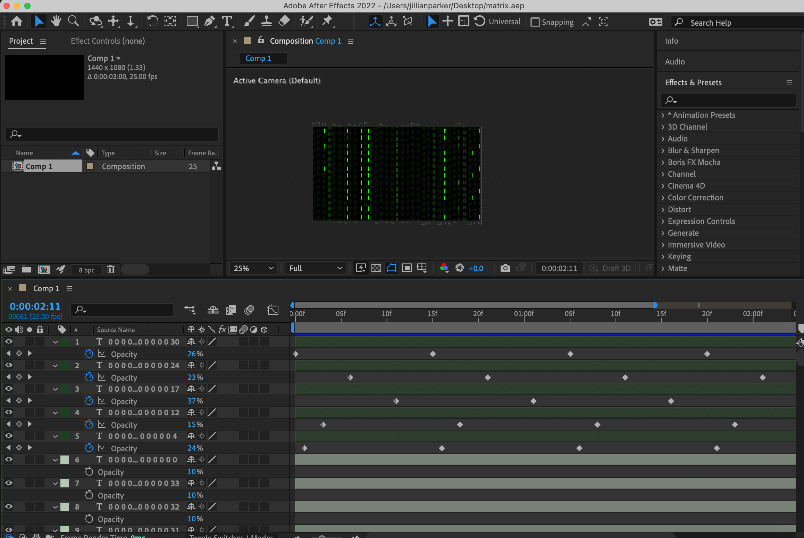

net.art series
Procedural Section
Page 2

Once I had the general body code typed into my documents, I would then start designing the background images and gifs for my pages.
I thought to have them designed and exported from external software like Adobe Illustrator and After Effects so that I could lessen my html document size and make it easier for servers to load my pages.
All of my net.art pieces use atleast one .png or .gif that I created in a different program and saved to my root folder. I chose .png and .gif for their transperency properties in exporting.